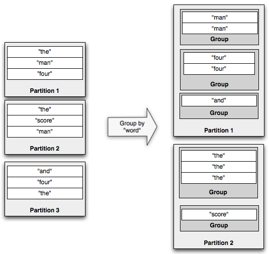

The core data model in Trident is the “Stream”, processed as a series of batches. A stream is partitioned among the nodes in the cluster, and operations applied to a stream are applied in parallel across each partition.
There are five kinds of operations in Trident:
Partition-local operations involve no network transfer and are applied to each batch partition independently.
A function takes in a set of input fields and emits zero or more tuples as output. The fields of the output tuple are appended to the original input tuple in the stream. If a function emits no tuples, the original input tuple is filtered out. Otherwise, the input tuple is duplicated for each output tuple. Suppose you have this function:
public class MyFunction extends BaseFunction {
public void execute(TridentTuple tuple, TridentCollector collector) {
for(int i=0; i < tuple.getInteger(0); i++) {
collector.emit(new Values(i));
}
}
}
Now suppose you have a stream in the variable “mystream” with the fields [“a”, “b”, “c”] with the following tuples:
[1, 2, 3]
[4, 1, 6]
[3, 0, 8]
If you run this code:
mystream.each(new Fields("b"), new MyFunction(), new Fields("d")))
The resulting tuples would have fields [“a”, “b”, “c”, “d”] and look like this:
[1, 2, 3, 0]
[1, 2, 3, 1]
[4, 1, 6, 0]
Filters take in a tuple as input and decide whether or not to keep that tuple or not. Suppose you had this filter:
public class MyFilter extends BaseFilter {
public boolean isKeep(TridentTuple tuple) {
return tuple.getInteger(0) == 1 && tuple.getInteger(1) == 2;
}
}
Now suppose you had these tuples with fields [“a”, “b”, “c”]:
[1, 2, 3]
[2, 1, 1]
[2, 3, 4]
If you ran this code:
mystream.filter(new MyFilter())
The resulting tuples would be:
[1, 2, 3]
map returns a stream consisting of the result of applying the given mapping function to the tuples of the stream. This
can be used to apply a one-one transformation to the tuples.
For example, if there is a stream of words and you wanted to convert it to a stream of upper case words, you could define a mapping function as follows,
public class UpperCase extends MapFunction {
@Override
public Values execute(TridentTuple input) {
return new Values(input.getString(0).toUpperCase());
}
}
The mapping function can then be applied on the stream to produce a stream of uppercase words.
mystream.map(new UpperCase())
flatMap is similar to map but has the effect of applying a one-to-many transformation to the values of the stream,
and then flattening the resulting elements into a new stream.
For example, if there is a stream of sentences and you wanted to convert it to a stream of words, you could define a flatMap function as follows,
public class Split extends FlatMapFunction {
@Override
public Iterable<Values> execute(TridentTuple input) {
List<Values> valuesList = new ArrayList<>();
for (String word : input.getString(0).split(" ")) {
valuesList.add(new Values(word));
}
return valuesList;
}
}
The flatMap function can then be applied on the stream of sentences to produce a stream of words,
mystream.flatMap(new Split())
Of course these operations can be chained, so a stream of uppercase words can be obtained from a stream of sentences as follows,
mystream.flatMap(new Split()).map(new UpperCase())
If you don’t pass output fields as parameter, map and flatMap preserves the input fields to output fields.
If you want to apply MapFunction or FlatMapFunction with replacing old fields with new output fields, you can call map / flatMap with additional Fields parameter as follows,
mystream.map(new UpperCase(), new Fields("uppercased"))
Output stream wil have only one output field “uppercased” regardless of what output fields previous stream had. Same thing applies to flatMap, so following is valid as well,
mystream.flatMap(new Split(), new Fields("word"))
peek can be used to perform an additional action on each trident tuple as they flow through the stream.
This could be useful for debugging to see the tuples as they flow past a certain point in a pipeline.
For example, the below code would print the result of converting the words to uppercase before they are passed to groupBy
mystream.flatMap(new Split()).map(new UpperCase())
.peek(new Consumer() {
@Override
public void accept(TridentTuple input) {
System.out.println(input.getString(0));
}
})
.groupBy(new Fields("word"))
.persistentAggregate(new MemoryMapState.Factory(), new Count(), new Fields("count"))
min and minBy operations return minimum value on each partition of a batch of tuples in a trident stream.
Suppose, a trident stream contains fields [“device-id”, “count”] and the following partitions of tuples
Partition 0:
[123, 2]
[113, 54]
[23, 28]
[237, 37]
[12, 23]
[62, 17]
[98, 42]
Partition 1:
[64, 18]
[72, 54]
[2, 28]
[742, 71]
[98, 45]
[62, 12]
[19, 174]
Partition 2:
[27, 94]
[82, 23]
[9, 86]
[53, 71]
[74, 37]
[51, 49]
[37, 98]
minBy operation can be applied on the above stream of tuples like below which results in emitting tuples with minimum values of count field in each partition.
mystream.minBy(new Fields("count"))
Result of the above code on mentioned partitions is:
Partition 0:
[123, 2]
Partition 1:
[62, 12]
Partition 2:
[82, 23]
You can look at other min and minBy operations on Stream
public <T> Stream minBy(String inputFieldName, Comparator<T> comparator)
public Stream min(Comparator<TridentTuple> comparator)
Below example shows how these APIs can be used to find minimum using respective Comparators on a tuple.
FixedBatchSpout spout = new FixedBatchSpout(allFields, 10, Vehicle.generateVehicles(20));
TridentTopology topology = new TridentTopology();
Stream vehiclesStream = topology.newStream("spout1", spout).
each(allFields, new Debug("##### vehicles"));
Stream slowVehiclesStream =
vehiclesStream
.min(new SpeedComparator()) // Comparator w.r.t speed on received tuple.
.each(vehicleField, new Debug("#### slowest vehicle"));
vehiclesStream
.minBy(Vehicle.FIELD_NAME, new EfficiencyComparator()) // Comparator w.r.t efficiency on received tuple.
.each(vehicleField, new Debug("#### least efficient vehicle"));
Example applications of these APIs can be located at TridentMinMaxOfDevicesTopology and TridentMinMaxOfVehiclesTopology
max and maxBy operations return maximum value on each partition of a batch of tuples in a trident stream.
Suppose, a trident stream contains fields [“device-id”, “count”] as mentioned in the above section.
max and maxBy operations can be applied on the above stream of tuples like below which results in emitting tuples with maximum values of count field for each partition.
mystream.maxBy(new Fields("count"))
Result of the above code on mentioned partitions is:
Partition 0:
[113, 54]
Partition 1:
[19, 174]
Partition 2:
[37, 98]
You can look at other max and maxBy functions on Stream
public <T> Stream maxBy(String inputFieldName, Comparator<T> comparator)
public Stream max(Comparator<TridentTuple> comparator)
Below example shows how these APIs can be used to find maximum using respective Comparators on a tuple.
FixedBatchSpout spout = new FixedBatchSpout(allFields, 10, Vehicle.generateVehicles(20));
TridentTopology topology = new TridentTopology();
Stream vehiclesStream = topology.newStream("spout1", spout).
each(allFields, new Debug("##### vehicles"));
vehiclesStream
.max(new SpeedComparator()) // Comparator w.r.t speed on received tuple.
.each(vehicleField, new Debug("#### fastest vehicle"))
.project(driverField)
.each(driverField, new Debug("##### fastest driver"));
vehiclesStream
.maxBy(Vehicle.FIELD_NAME, new EfficiencyComparator()) // Comparator w.r.t efficiency on received tuple.
.each(vehicleField, new Debug("#### most efficient vehicle"));
Example applications of these APIs can be located at TridentMinMaxOfDevicesTopology and TridentMinMaxOfVehiclesTopology
Trident streams can process tuples in batches which are of the same window and emit aggregated result to the next operation. There are two kinds of windowing supported which are based on processing time or tuples count: 1. Tumbling window 2. Sliding window
Tuples are grouped in a single window based on processing time or count. Any tuple belongs to only one of the windows.
/**
* Returns a stream of tuples which are aggregated results of a tumbling window with every {@code windowCount} of tuples.
*/
public Stream tumblingWindow(int windowCount, WindowsStoreFactory windowStoreFactory,
Fields inputFields, Aggregator aggregator, Fields functionFields);
/**
* Returns a stream of tuples which are aggregated results of a window that tumbles at duration of {@code windowDuration}
*/
public Stream tumblingWindow(BaseWindowedBolt.Duration windowDuration, WindowsStoreFactory windowStoreFactory,
Fields inputFields, Aggregator aggregator, Fields functionFields);
Tuples are grouped in windows and window slides for every sliding interval. A tuple can belong to more than one window.
/**
* Returns a stream of tuples which are aggregated results of a sliding window with every {@code windowCount} of tuples
* and slides the window after {@code slideCount}.
*/
public Stream slidingWindow(int windowCount, int slideCount, WindowsStoreFactory windowStoreFactory,
Fields inputFields, Aggregator aggregator, Fields functionFields);
/**
* Returns a stream of tuples which are aggregated results of a window which slides at duration of {@code slidingInterval}
* and completes a window at {@code windowDuration}
*/
public Stream slidingWindow(BaseWindowedBolt.Duration windowDuration, BaseWindowedBolt.Duration slidingInterval,
WindowsStoreFactory windowStoreFactory, Fields inputFields, Aggregator aggregator, Fields functionFields);
Examples of tumbling and sliding windows can be found here
Below is the common windowing API which takes WindowConfig for any supported windowing configurations.
public Stream window(WindowConfig windowConfig, WindowsStoreFactory windowStoreFactory, Fields inputFields,
Aggregator aggregator, Fields functionFields)
windowConfig can be any of the below.
SlidingCountWindow.of(int windowCount, int slidingCount)SlidingDurationWindow.of(BaseWindowedBolt.Duration windowDuration, BaseWindowedBolt.Duration slidingDuration)TumblingCountWindow.of(int windowLength)TumblingDurationWindow.of(BaseWindowedBolt.Duration windowLength)Trident windowing APIs need WindowsStoreFactory to store received tuples and aggregated values. Currently, basic implementation
for HBase is given with HBaseWindowsStoreFactory. It can further be extended to address respective usecases.
Example of using HBaseWindowStoreFactory for windowing can be seen below.
// window-state table should already be created with cf:tuples column
HBaseWindowsStoreFactory windowStoreFactory = new HBaseWindowsStoreFactory(new HashMap<String, Object>(), "window-state", "cf".getBytes("UTF-8"), "tuples".getBytes("UTF-8"));
FixedBatchSpout spout = new FixedBatchSpout(new Fields("sentence"), 3, new Values("the cow jumped over the moon"),
new Values("the man went to the store and bought some candy"), new Values("four score and seven years ago"),
new Values("how many apples can you eat"), new Values("to be or not to be the person"));
spout.setCycle(true);
TridentTopology topology = new TridentTopology();
Stream stream = topology.newStream("spout1", spout).parallelismHint(16).each(new Fields("sentence"),
new Split(), new Fields("word"))
.window(TumblingCountWindow.of(1000), windowStoreFactory, new Fields("word"), new CountAsAggregator(), new Fields("count"))
.peek(new Consumer() {
@Override
public void accept(TridentTuple input) {
LOG.info("Received tuple: [{}]", input);
}
});
StormTopology stormTopology = topology.build();
Detailed description of all the above APIs in this section can be found here
Example applications of these APIs are located at TridentHBaseWindowingStoreTopology and TridentWindowingInmemoryStoreTopology
partitionAggregate runs a function on each partition of a batch of tuples. Unlike functions, the tuples emitted by partitionAggregate replace the input tuples given to it. Consider this example:
mystream.partitionAggregate(new Fields("b"), new Sum(), new Fields("sum"))
Suppose the input stream contained fields [“a”, “b”] and the following partitions of tuples:
Partition 0:
["a", 1]
["b", 2]
Partition 1:
["a", 3]
["c", 8]
Partition 2:
["e", 1]
["d", 9]
["d", 10]
Then the output stream of that code would contain these tuples with one field called “sum”:
Partition 0:
[3]
Partition 1:
[11]
Partition 2:
[20]
There are three different interfaces for defining aggregators: CombinerAggregator, ReducerAggregator, and Aggregator.
Here’s the interface for CombinerAggregator:
public interface CombinerAggregator<T> extends Serializable {
T init(TridentTuple tuple);
T combine(T val1, T val2);
T zero();
}
A CombinerAggregator returns a single tuple with a single field as output. CombinerAggregators run the init function on each input tuple and use the combine function to combine values until there’s only one value left. If there’s no tuples in the partition, the CombinerAggregator emits the output of the zero function. For example, here’s the implementation of Count:
public class Count implements CombinerAggregator<Long> {
public Long init(TridentTuple tuple) {
return 1L;
}
public Long combine(Long val1, Long val2) {
return val1 + val2;
}
public Long zero() {
return 0L;
}
}
CombinerAggregators offer high efficiency when used with the aggregate method instead of partitionAggregate (see below).
A ReducerAggregator has the following interface:
public interface ReducerAggregator<T> extends Serializable {
T init();
T reduce(T curr, TridentTuple tuple);
}
A ReducerAggregator produces an initial value with init, and then it iterates on that value for each input tuple to produce a single tuple with a single value as output. For example, here’s how you would define Count as a ReducerAggregator:
public class Count implements ReducerAggregator<Long> {
public Long init() {
return 0L;
}
public Long reduce(Long curr, TridentTuple tuple) {
return curr + 1;
}
}
ReducerAggregator can also be used with persistentAggregate, as you’ll see later.
The most general interface for performing aggregations is Aggregator, which looks like this:
public interface Aggregator<T> extends Operation {
T init(Object batchId, TridentCollector collector);
void aggregate(T state, TridentTuple tuple, TridentCollector collector);
void complete(T state, TridentCollector collector);
}
Aggregators can emit any number of tuples with any number of fields. They can emit tuples at any point during execution. Aggregators execute in the following way:
Here’s how you would implement Count as an Aggregator:
public class CountAgg extends BaseAggregator<CountState> {
static class CountState {
long count = 0;
}
public CountState init(Object batchId, TridentCollector collector) {
return new CountState();
}
public void aggregate(CountState state, TridentTuple tuple, TridentCollector collector) {
state.count+=1;
}
public void complete(CountState state, TridentCollector collector) {
collector.emit(new Values(state.count));
}
}
Sometimes you want to execute multiple aggregators at the same time. This is called chaining and can be accomplished like this:
mystream.chainedAgg()
.partitionAggregate(new Count(), new Fields("count"))
.partitionAggregate(new Fields("b"), new Sum(), new Fields("sum"))
.chainEnd()
This code will run the Count and Sum aggregators on each partition. The output will contain a single tuple with the fields [“count”, “sum”].
stateQuery and partitionPersist query and update sources of state, respectively. You can read about how to use them on Trident state doc.
The projection method on Stream keeps only the fields specified in the operation. If you had a Stream with fields [“a”, “b”, “c”, “d”] and you ran this code:
mystream.project(new Fields("b", "d"))
The output stream would contain only the fields [“b”, “d”].
Repartitioning operations run a function to change how the tuples are partitioned across tasks. The number of partitions can also change as a result of repartitioning (for example, if the parallelism hint is greater after repartioning). Repartitioning requires network transfer. Here are the repartitioning functions:
Trident has aggregate and persistentAggregate methods for doing aggregations on Streams. aggregate is run on each batch of the stream in isolation, while persistentAggregate will aggregation on all tuples across all batches in the stream and store the result in a source of state.
Running aggregate on a Stream does a global aggregation. When you use a ReducerAggregator or an Aggregator, the stream is first repartitioned into a single partition, and then the aggregation function is run on that partition. When you use a CombinerAggregator, on the other hand, first Trident will compute partial aggregations of each partition, then repartition to a single partition, and then finish the aggregation after the network transfer. CombinerAggregator’s are far more efficient and should be used when possible.
Here’s an example of using aggregate to get a global count for a batch:
mystream.aggregate(new Count(), new Fields("count"))
Like partitionAggregate, aggregators for aggregate can be chained. However, if you chain a CombinerAggregator with a non-CombinerAggregator, Trident is unable to do the partial aggregation optimization.
You can read more about how to use persistentAggregate in the Trident state doc.
The groupBy operation repartitions the stream by doing a partitionBy on the specified fields, and then within each partition groups tuples together whose group fields are equal. For example, here’s an illustration of a groupBy operation:

If you run aggregators on a grouped stream, the aggregation will be run within each group instead of against the whole batch. persistentAggregate can also be run on a GroupedStream, in which case the results will be stored in a MapState with the key being the grouping fields. You can read more about persistentAggregate in the Trident state doc.
Like regular streams, aggregators on grouped streams can be chained.
The last part of the API is combining different streams together. The simplest way to combine streams is to merge them into one stream. You can do that with the TridentTopology#merge method, like so:
topology.merge(stream1, stream2, stream3);
Trident will name the output fields of the new, merged stream as the output fields of the first stream.
Another way to combine streams is with a join. Now, a standard join, like the kind from SQL, require finite input. So they don’t make sense with infinite streams. Joins in Trident only apply within each small batch that comes off of the spout.
Here’s an example join between a stream containing fields [“key”, “val1”, “val2”] and another stream containing [“x”, “val1”]:
topology.join(stream1, new Fields("key"), stream2, new Fields("x"), new Fields("key", "a", "b", "c"));
This joins stream1 and stream2 together using “key” and “x” as the join fields for each respective stream. Then, Trident requires that all the output fields of the new stream be named, since the input streams could have overlapping field names. The tuples emitted from the join will contain:
When a join happens between streams originating from different spouts, those spouts will be synchronized with how they emit batches. That is, a batch of processing will include tuples from each spout.
You might be wondering – how do you do something like a “windowed join”, where tuples from one side of the join are joined against the last hour of tuples from the other side of the join.
To do this, you would make use of partitionPersist and stateQuery. The last hour of tuples from one side of the join would be stored and rotated in a source of state, keyed by the join field. Then the stateQuery would do lookups by the join field to perform the “join”.